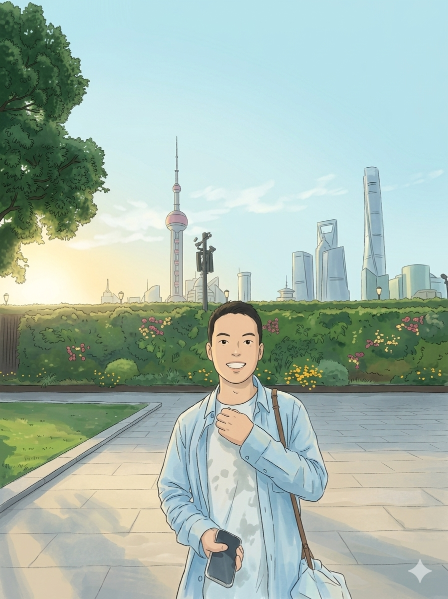

Assistant Professor
Shenzhen Technology University
I am currently a member of the Large Language Model Technology and Application Team within the College of AI at Shenzhen Technology University. I received my Ph.D. degree in 2025 from Harbin Institute of Technology (Shenzhen), advised by Prof. Ruifeng Xu. Once a member, always a member: I continue to identify with the Human Language Technology Lab at HIT Shenzhen even after graduation.
My research explores the systematic integration of large language models with multimodal learning and affective computing—focusing on building emotionally intelligent systems that can perceive, understand, and interact with the world through a human-centric lens.
In terms of academic service, I serve as a member of the Affective Computing Technical Committee of the Guangdong Society of Image and Graphics (2026–2030). I have provided long-standing peer review services for TAFFC, TASLP, ESWA, ACL, EMNLP, and COLING.
Showing your approximate location.